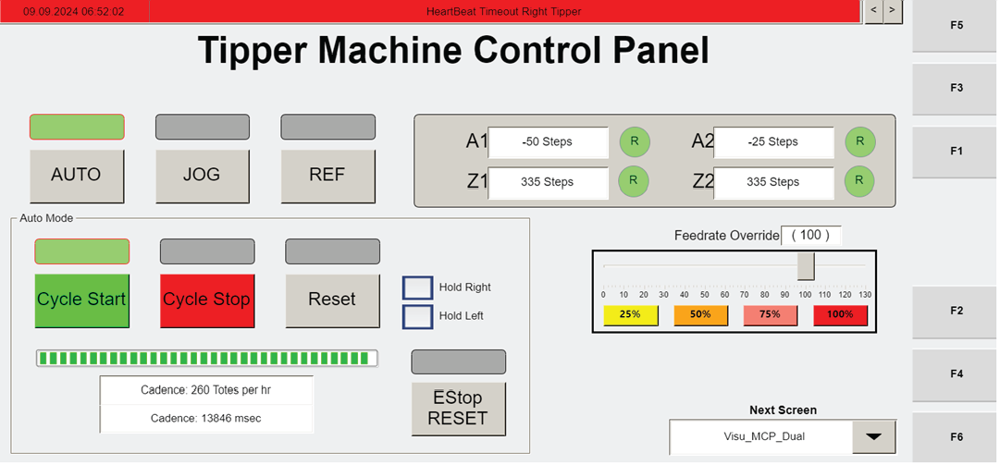
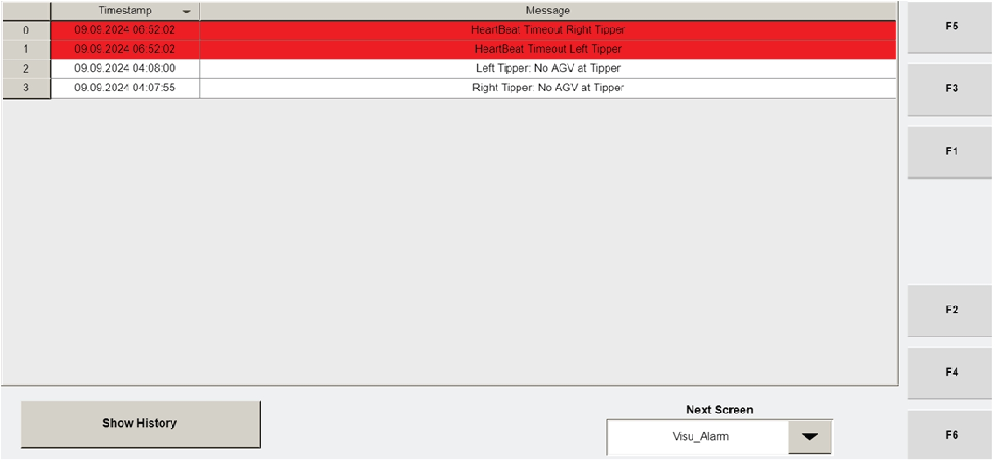

| Procedure ID | proc_show_alarm_history_from_the_visu_alarm_screen_v1 |
|---|---|
| Title | Show Alarm History From the Visu_Alarm Screen |
| Procedure Type | operation |
| Primary Role | operator |
| Support Safe | Yes |
| Validation Status | needs_sme_review |
| Merge Status | source_finalized |
Use the SHOW HISTORY button on the Operator Station HMI Visu_Alarm screen to display historical alarm records. The source states that the SHOW HISTORY button shows the last 1500 records.
Use this procedure when an operator needs to view alarm history from the Operator Station HMI Visu_Alarm screen.
Responsible role: operator
Instruction:
Access the Operator Station HMI Visu_Alarm screen.
Expected result:
The Visu_Alarm screen is displayed on the Operator Station HMI.
Screens / Images:


Stop or Escalate If:
Responsible role: operator
Instruction:
Locate the SHOW HISTORY button on the Visu_Alarm screen.
Expected result:
The SHOW HISTORY button is visible and ready to be selected.
Screens / Images:
Stop or Escalate If:
Responsible role: operator
Instruction:
Press the SHOW HISTORY button.
Expected result:
The HMI updates to show alarm history records.
Screens / Images:
Stop or Escalate If:
Responsible role: operator
Instruction:
Verify that the screen shows alarm history records, with the documented history limited to the last 1500 records.
Expected result:
The Visu_Alarm screen displays alarm history records representing the last 1500 records.
Screens / Images:
Stop or Escalate If: